Gallery# Bokeh Matplotlib Airport Graph 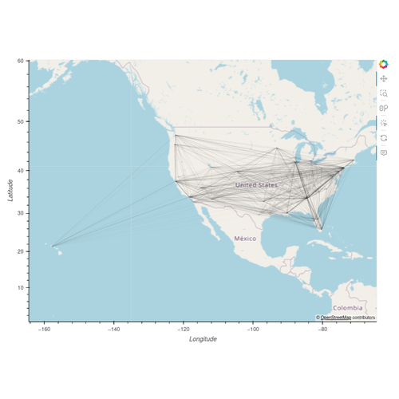 Brexit Choropleth 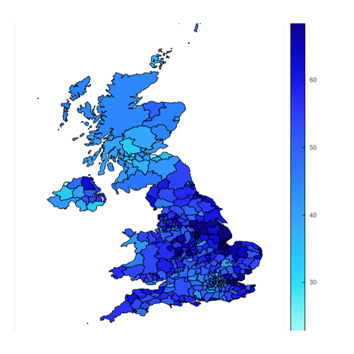 City Populations 2050 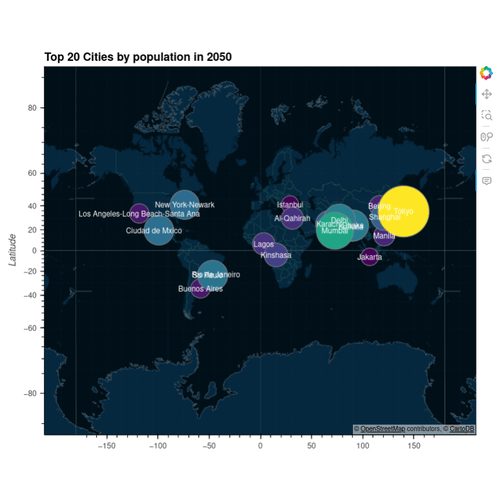 Filled Contours 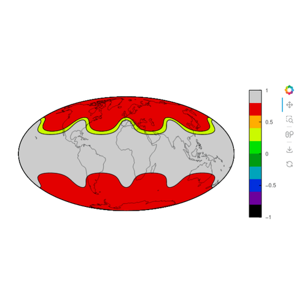 Great Circle 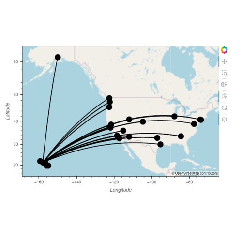 Katrina Track 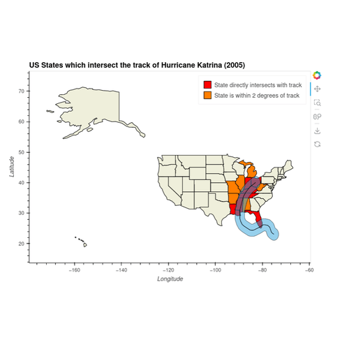 New York Boroughs 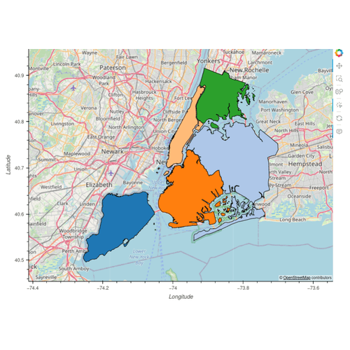 Orthographic Vectorfield 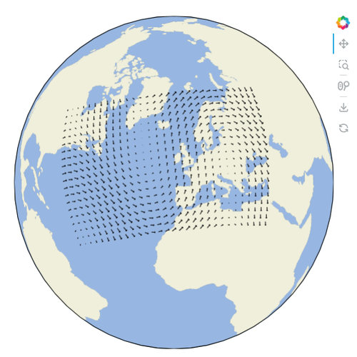 Tile Sources 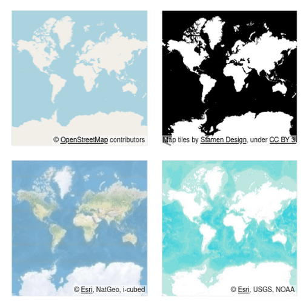 Trimesh Uk 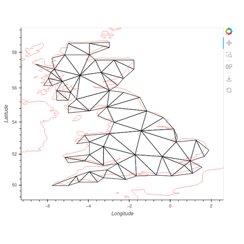 Vectorfield Example 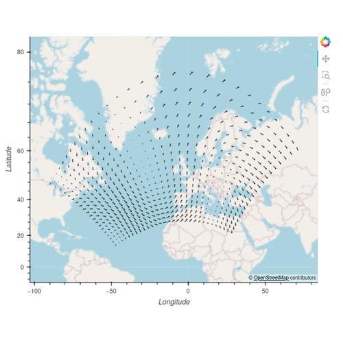 World Population 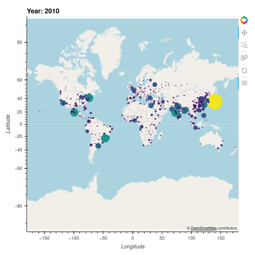 Xarray Image 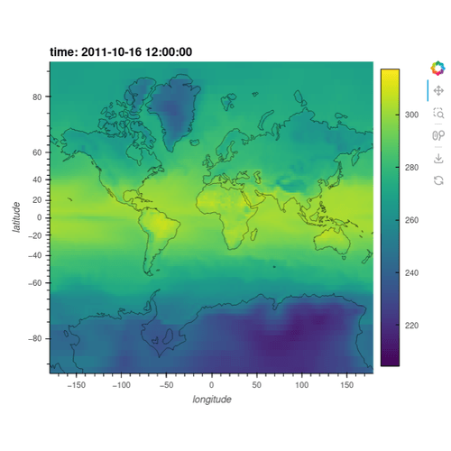 Xarray Quadmesh 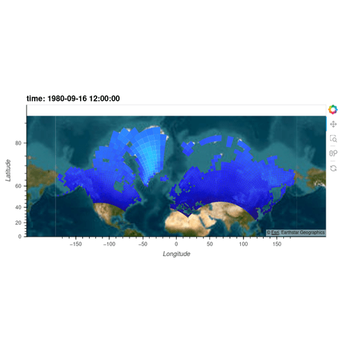 Airport Graph 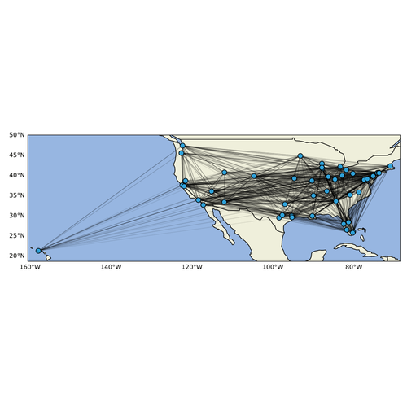 Brexit Choropleth 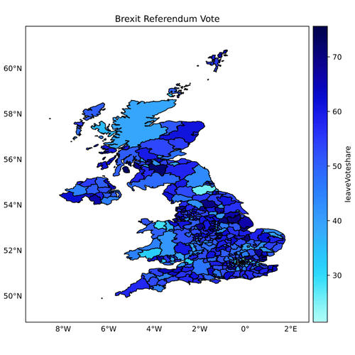 City Population 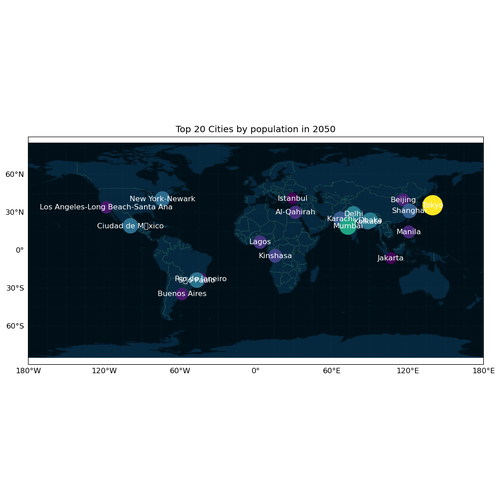 Filled Contours 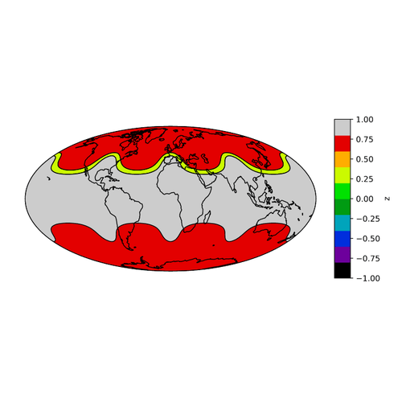 Great Circle 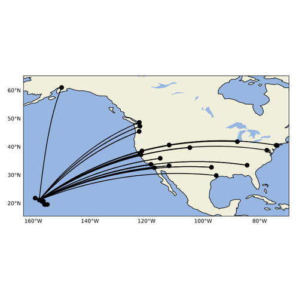 Katrina Track 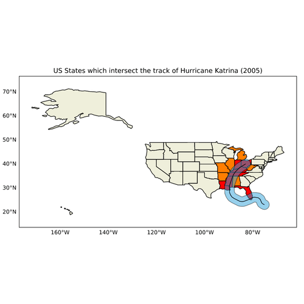 New York Boroughs 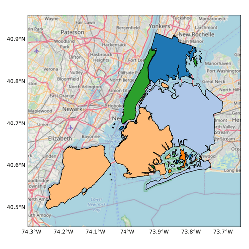 Orthographic Vectorfield 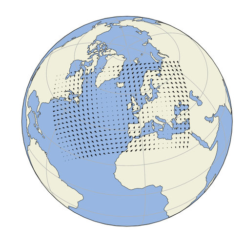 Tile Sources 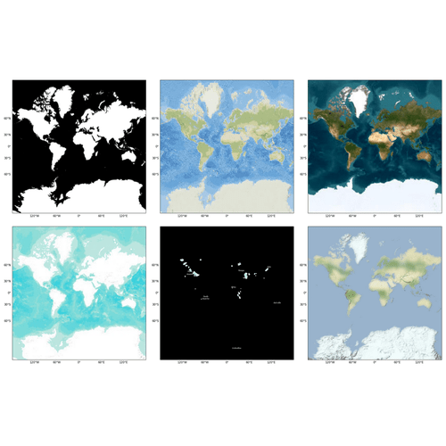 Trimesh Uk 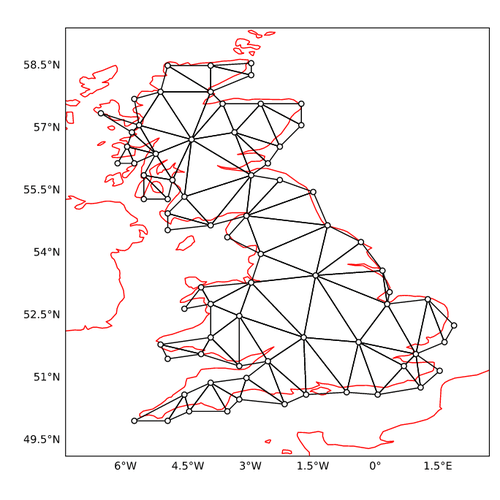 Vectorfield Example 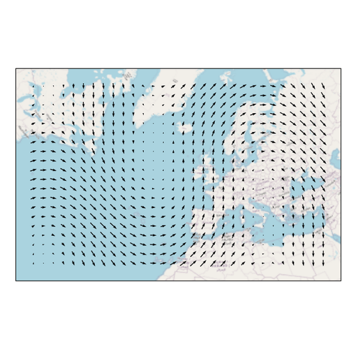 Wind Barbs Example 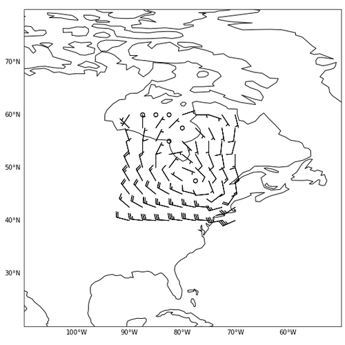 World Population 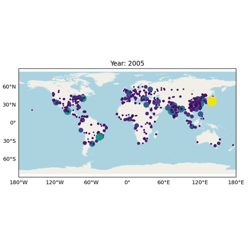 Xarray Image 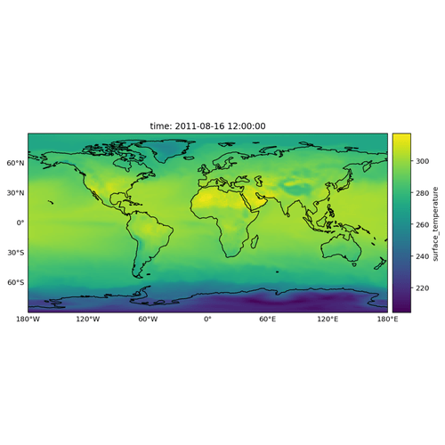 Xarray Quadmesh 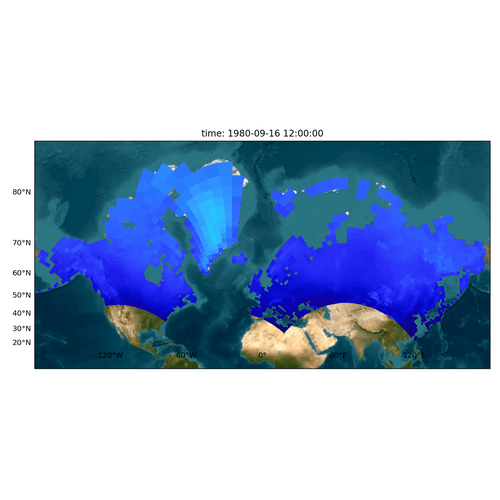